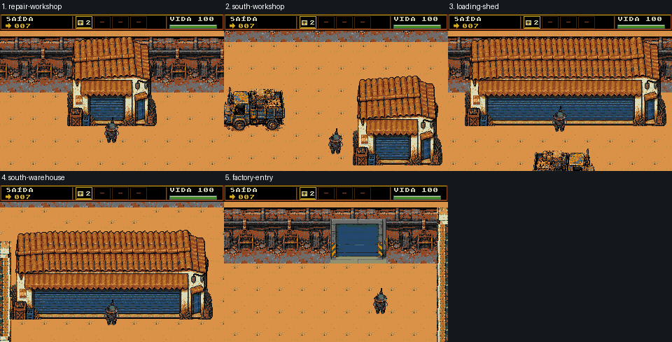

Fase9 · revisão3 isolada
Dois galpões largos com pontas/apoios completos e persiana contínua. Apenas tiles residentes do banco anterior:630/640, nenhum tile novo. Isso não equivale a aprovação visual.
Manifesto · Parecer e limites · Geometria e rota
Panorama1x
Cinco câmeras normais
Prévias compostas com ator/HUD existentes; não são capturas novas do emulador. Cada construção principal aparece inteira abaixo do HUD em uma destas vistas; o caminhão da baía pode cruzar a borda da câmera.

Limites para revisão independente
- Two wide288pxsheds extend one existing128pxworkshop by exact intermediate roof/shutter strips. Their common clay-roof family remains visible; these are not newly generated industrial hangar assets.
- All used8x8tiles and palette are from previous630tileproposal; exact tile reuse proves provenance/memory only, not composition quality.
- The loading truck is now32pxahead of the wide north shed; rear/south warehouse has32pxservice depth before lowerwall.
- Root must inspect whether the broad shutter/roof repetition reads as coherent working sheds rather than duplicated facade fragments.
- Native actor/HUD previews are composed, not running-ROM captures. Active9andsharedC/ROMremainunchanged.